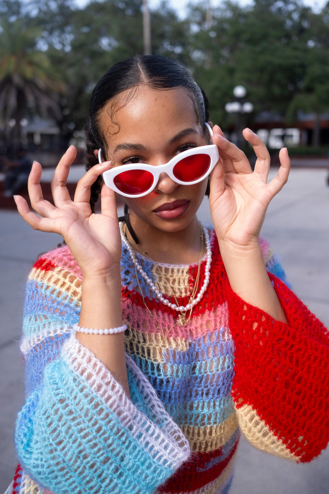

Fall Fashion
Introduction
Fall fashion is one of the most exciting parts of the fall season and can put anyone in a good mood! However, choosing a style or piece of clothing that can both suit you and be trendy can be difficult. Luckily, there are so many trendy clothing pieces to choose from, and we even provided some tips on how you can be a part of this season's clothing trends!
Aesthetics
Some of you may be asking, “What does the term ‘aesthetic’ have to do with this?” Well, this term made its rise to fame on social media during the COVID-19 pandemic in 2020, and it has been used to describe one’s style or vibe. Many have used aesthetics to develop a sense of individuality among themselves. Aesthetics also incorporate certain color palettes, whether it’s bright pastel colors or shades of red and brown. Although there are many fall aesthetics, this year's trending aesthetic is the Downtown aesthetic.

The Downtown aesthetic is a simple yet cozy aesthetic, originally fantasizing the downtown areas of cities. The aesthetic then evolved to people dressing and acting accordingly. The Downtown aesthetic incorporates shades of red, brown, and even navy blue, and clothing pieces such as striped sweaters, a cardigan, and some Doc Martens. If you have these items, you could pull off this aesthetic too! If this aesthetic doesn’t interest you, we’re sure you’ll love the Coquette, Cottagecore, and Old Money aesthetics!
Clothing
Grab a pen and paper, because here are some of our favorite clothing pieces this fall season. If you're going for a fancier look, be sure to include lots of leather jackets, off-the-shoulder sweaters, and plaided skirts. Or if your style is more on the simple side, try some oversized sweaters, flared jeans, or some loungewear. Since dark weather like rain, wind and cloudy days take place often during the fall, dark colors such as olive green, navy blue, browns, and beiges are the best color choices to fit the mood. If you’re looking for more inspiration, incorporate some knitted and crochet pieces as well.
Knitting and crocheting, for many years, have been considered “old lady” hobbies, but ever since the COVID-19 pandemic, they have been hobbies that teenagers, young adults, and even kids have picked up. If knitted and crochet pieces interest you, be sure to buy or make sweaters, cardigans, beanies, and leg warmers this year.
Conclusion
Fall fashion is absolutely iconic! From the cozy fall sweaters to the knitted beanies for the chilly days, you are sure to catch up with the fashion trends this season. What are you waiting for? You can find all these cute clothing pieces at a clothing store or craft store near you!